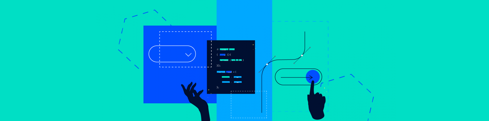
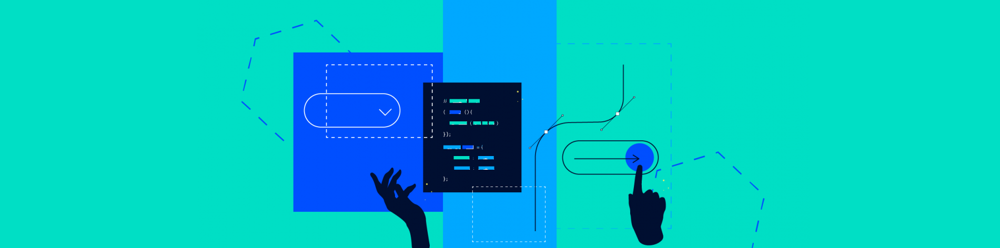

Voordat ik de opleiding software development koos wist ik amper wat coderen was en hoe ik dit moest doen en met wat ik wist deed ik niet zo veel. Door deze opleiding ben ik meer in mijn vrijetijd bezig geweest met het maken van bepaalde dingen in bijvoorbeeld CSS die nog niet besproken zijn in de lessen. Ik vind het erg leuk om een code te schrijven en dan een soort van de site tot leven zien te komen.
Ook ben ik erg creatief dus dat komt vaak goed van pas al wil ik een originele site bouwen voor een klant of voor een project, vaak vind ik het ook fijn als andere hun mening durven te geven op mijn werk zodat ik het eventueel kan verbeteren waar nodig.
Ik heb in een half jaar tijd veel dingen geleerd op een bepaalde volgorde, het jaar startte met de introductie van HTML, CSS en Javascript. Hier leerde we bijvoorbeeld bij HTML wat blok- en inline elementen zijn, wat sup- en subscript is, verschillende mark-up mogelijkheden en nog veel meer om een basis statische website te maken. Bij CSS leerde we de selectoren, hoe je je lettertype kon veranderen en hoe je bepaalde elementen een andere kleur kan geven. Tenslotte leerde we in Javascript de variabelen schrijven, de console uit te kunnen lezen, javascript naar HTML te schrijven, strings, prompts, bouleans en numbers te gebruiken en vergelijkingen te maken.
Ik heb in de 2e periode heel erg veel bij geleerd, wat je ook kan terug zien in deze site. Onder andere het positioneren van elementen, responsive maken, een nav bar maken en nog veel meer rondom een gevorderde statische website te maken. Ik vind het erg leuk om dingen die nog niet in de les aan bod zijn gekomen te proberen bij mijn Praktijk opdrachten, dit doe ik dan ook regelmatig.